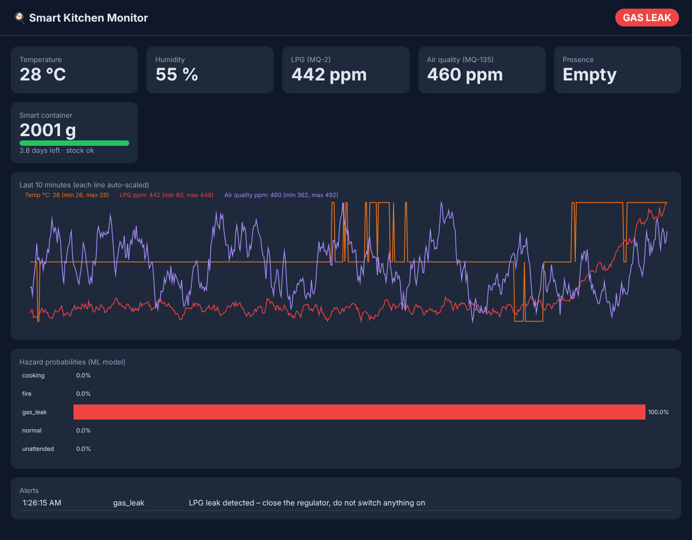

Smart Kitchen Safety
Catching gas leaks and unattended cooking minutes earlier
Arduino and ESP8266 sensors stream to a cloud ML hazard detector that spots LPG leaks, fire and unattended cooking. On 120 hours of labelled sensor data it raises a gas-leak alarm in 12 s instead of 213 s, with under one false alarm a day.
From sensor to alarm
architecture + test results- 01Sensorsgas · heat · motion · flame · weight
- 02Arduino Unooffline buzzer + fan rules
- 03ESP8266Wi-Fi → JSON over HTTP
- 04Features30 rolling, past-only signals
- 05ML detectorgradient boosting, 5 classes
- 06Alert + actTelegram · fan on · dashboard
Gas-leak alarm delay (lower is better)
False alarms per day (lower is better)
~/screens
See it working

[01] ~/the-problem
Why it matters
LPG leaks are a daily risk in Indian kitchens, and cooking is the leading cause of home fires in US fire statistics (NFPA). Single-threshold alarms fire late, because LPG must first reach 1,000+ ppm, and fire falsely when a burner puffs.
This system keeps instant offline rules on the Arduino for the worst cases and adds a cloud model that reads trends across all sensors, so it warns earlier and cries wolf far less.
A flame still triggers the local buzzer instantly through the flame-sensor rule, so the cloud model can afford a short confirmation window.
[02] ~/how-it-works
How it works
Local rules for instant safety, a cloud model for earlier and smarter alerts.
- 01
Wire the sensors
DHT11, MQ-2, MQ-135, PIR, flame sensor and a load cell on an Arduino Uno, with a relay for the exhaust fan.
- 02
Act locally first
The Uno sounds the buzzer and starts the fan immediately and offline, for example on a flame or LPG above 2,000 ppm.
- 03
Send to the cloud
An ESP8266 posts each reading as JSON to a FastAPI backend, which stores it in SQLite and can send fan commands back.
- 04
Engineer features
Rolling means and slopes over 30 s and 120 s, heat and gas above baseline, and time since last motion, using past data only.
- 05
Classify hazards
Gradient boosting labels each second as normal, cooking, gas leak, fire or unattended, trained and tested on separate episodes.
- 06
Confirm, then alarm
8 s of agreeing predictions for gas or fire and 60 s for unattended cooking keep false alarms under one a day.
[03] ~/results
Results
Held-out episodes from 120 hours of labelled 1 Hz data, split by episode so no event leaks between train and test.
| DETECTOR | MACRO F1 | GAS DELAY | FIRE DELAY | UNATTENDED | FALSE ALARMS/DAY |
|---|---|---|---|---|---|
| ML detector | 0.986 | 12 s | 7 s | 15 / 15 | 0.79 |
| Fixed thresholds | 0.541 | 213 s | 0 s (flame) | 6 / 15 | 26.0 |
Fixed rules win on fire delay only because the flame sensor fires instantly; that rule stays on the Arduino, so the system keeps the instant response.
HONEST LIMITS
— The data comes from a physics-inspired simulator because physical sensors weren't available; the numbers show the method, not field performance.
— A real deployment needs sensor calibration and a pilot in actual kitchens before the thresholds can be trusted.
WHAT I’D DO NEXT
→ Collect real sensor data from a test kitchen
→ Automatic cylinder booking from the container level
→ Battery backup and a GSM fallback for alerts
→ A phone app alongside the LAN dashboard